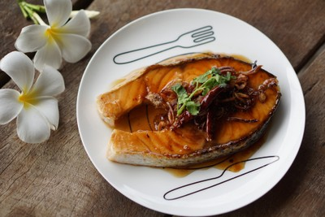

แซลมอนซอสมะขาม
200 Kcal/เสิร์ฟ
ปลาแซลมอนจัดได้ว่าเป็นราชาแห่งปลาทะเลเลยค่ะ เป็นแหล่งไขมันดี มีโอเมก้า 3 คอลลาเจน และวิตามินต่าง ๆ ที่เป็นประโยชน์ต่อร่างกาย เรียกว่าใครที่เบื่ออกไก่อยากหันมาทานปลาแซลมอนก็ถือว่าดีเลยนะคะ ได้ประโยชน์ไม่แพ้กันเลยค่ะ วันนี้เลยอยากนำเสนอเมนู “แซลมอนซอสมะขาม” ได้ทั้งประโยชน์และรสชาติเปรี้ยวหวานครบรส ว่าแล้วเรามาดูวัตถุดิบกันเลยค่ะ
วิธีทำ เมนู “แซลมอนซอสมะขาม” เมนูอาหารคลีน สไตล์ไทย ๆ
วัตถุดิบ
- ปลาแซลมอน 1 ชิ้น
- น้ำตาลมะพร้าว 80 กรัม
- น้ำมะขามเปียก 2 1/2 ช้อนโต๊ะ
- น้ำเปล่า 2 ช้อนโต๊ะ
- เกลือ Low Sodium ½ ช้อนชา
- น้ำปลา Low Sodium 1 ช้อนโต๊ะ
- พริกแห้ง (สำหรับตกแต่ง)
- ผักชี (สำหรับตกแต่ง)
- หอมแดงเจียว (สำหรับตกแต่ง)
วิธีทำ
STEP 1 : ปรุงรสปลาแซลมอน
นำปลาแซลมอนที่เตรียมไว้ทาด้วยเกลือ Low Sodium ให้ทั่วทั้ง 2 ด้าน แล้วพักไว้ค่ะ
STEP 2 : ทำซอสมะขาม
ตั้งกระทะไฟกลางนะคะ ใส่น้ำตาลมะพร้าวลงไป ตามด้วยน้ำมะขามเปียก คนให้เข้ากัน เติมน้ำปลา Low Sodium และน้ำเปล่าลงไป เคี่ยวจนได้ที่ รอจนข้นเหนียวตามชอบ ปิดไฟได้เลยค่ะ ทิ้งไว้รอจนตัวซอสเย็นก่อนนะคะ
ใส่น้ำตาลมะพร้าวลงไป เคี่ยวน้ำตาลมะพร้าว
STEP 3 : จี่ปลาแซลมอน
ตั้งกระทะไฟกลาง นำแซลมอน จี่ลงบนกระทะ อย่ากลับตัวปลาบ่อยนะคะ เดี๋ยวปลาจะเละ ไม่สวยได้ค่ะ เมื่อสุกได้ที่ ให้รีบนำขึ้นเลยค่ะ
จี่ปลาแซลมอน
STEP 4 : ประกอบร่างเลยจ้า
นำซอสมะขามที่เย็นลงแล้ว ราดลงบนปลาแซลมอนได้เลยค่ะ ตกแต่งด้วยหอมเจียว พริกแห้ง ผักชี แค่นี้ก็พร้อมทานแล้วค่า

ราดซอสมะขามบนปลาแซลมอน เมนูปบาแซลมอนซอสมะขาม
“แซลมอนซอสมะขาม” เป็นเมนูที่ทำทานที่ไรก็อยากจะทานอีกทุกครั้งเลยค่ะ เพราะรสชาติเปรี้ยว ๆ หวาน ๆ ผสมกับเนื้อปลานุ่ม ๆ หอม ๆ ทานกับข้าวกล้องร้อน ๆ ฟินได้ใจทุกครั้งเลยค่ะ ลองทำกันดูนะคะ รับรองจะติดใจเลยค่า หรือถ้าใครอยากได้ความแซ่บ แนะนำให้เข้าไปดูสูตรเมนูลาบลูกชิ้นอกไก่ กันเลยค่า แซ่บฟินแบบคลีน ๆ กันไปเล้ย!